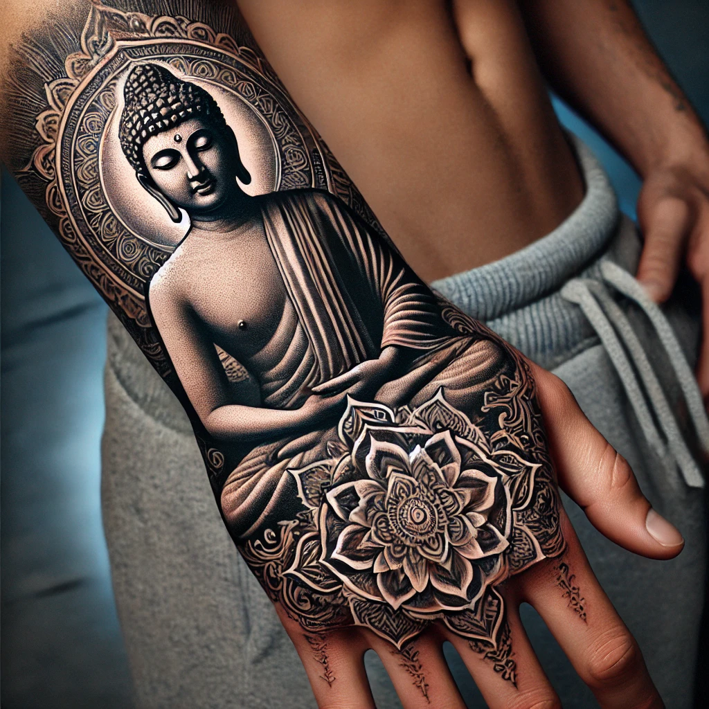

Buddha tattoos have become increasingly popular for those who seek to express spirituality, peace, and mindfulness through body art. A Buddha tattoo on the hand is a powerful symbol, not only because of the religious significance it holds but also because of the hand's visibility and cultural importance. For many, having a Buddha tattoo on the hand represents a personal commitment to spiritual growth and the pursuit of inner peace.
The Significance of Buddha Tattoos
Buddha tattoos hold profound significance in various cultures, especially in Buddhist-majority regions like Thailand, India, and Nepal. The image of Buddha represents enlightenment, serenity, and wisdom, making it an ideal symbol for individuals seeking spiritual connection. Beyond religious circles, Buddha has also come to symbolize inner peace and mindfulness, concepts that resonate deeply in today’s fast-paced world.
Wearing a Buddha tattoo reflects one's personal journey towards balance and harmony. It serves as a constant reminder to live life with compassion and humility. People choose Buddha tattoos not only for their spiritual meaning but also for their artistic and calming appearance. Whether designed in a traditional or modern style, the image of Buddha always evokes a sense of calm.
Why Choose a Buddha Tattoo for the Hand?
The hand is a particularly symbolic part of the body in many cultures and religions, making it an ideal canvas for a Buddha tattoo. In Buddhism, the hand is often associated with specific mudras (symbolic hand gestures) that convey different teachings or states of mind. A Buddha tattoo on the hand emphasizes these spiritual connections, allowing the wearer to showcase their belief and devotion.
Additionally, the hand is one of the most visible areas for body art. A Buddha tattoo on the hand can serve as a daily reminder of the wearer’s spiritual path, continually influencing thoughts and actions. Hands also symbolize creativity and action, which pairs perfectly with the Buddha’s teachings about mindfulness and purposeful living.
Styles and Designs of Buddha Tattoos on Hand
Buddha tattoos can be rendered in a variety of artistic styles, each offering a unique aesthetic and meaning. Choosing the right style for a hand tattoo is essential, as it’s a small but prominent area. Below are some popular styles for Buddha tattoos on the hand:
Realistic Buddha Tattoos
Realistic Buddha tattoos aim to capture the fine details of the Buddha’s face and expressions. These tattoos often depict the serene and meditative face of Buddha, emphasizing peace and enlightenment. Due to the complexity, realistic Buddha tattoos may require more skill and detail, making them more suitable for the back of the hand where there’s more space.
Minimalist Buddha Tattoos
For those seeking a more subtle approach, minimalist Buddha tattoos use clean lines and simplified forms. This style is perfect for individuals who want a Buddha tattoo without too much detail, especially if the tattoo is on the fingers or palms. Minimalist designs can still carry profound meaning while keeping the design simple and elegant.
Traditional and Ornate Buddha Tattoos
Traditional Buddha tattoos often draw inspiration from ancient Buddhist art, particularly the intricate designs seen in temples and scriptures. These designs may include elaborate patterns and religious symbols surrounding the Buddha’s figure, adding depth to the tattoo. This style is ideal for those who want to embrace a more classic look with deep cultural and spiritual connections.
Mandala Buddha Tattoos
Mandala tattoos represent the universe, spiritual wholeness, and the interconnectedness of all things, aligning perfectly with the Buddha’s teachings. When combined with the image of Buddha, the mandala enhances the overall spiritual meaning of the tattoo. This style often features intricate patterns and symmetry, making it an eye-catching design for the hand.
Color vs. Black and White Buddha Tattoos
When choosing between color or black-and-white Buddha tattoos, it's essential to consider how each option aligns with the symbolism you wish to convey. Colors like gold, blue, and green are often used in Buddhist art, representing wealth, enlightenment, and life. A colored Buddha tattoo may symbolize vibrant energy or spirituality.
On the other hand, black-and-white Buddha tattoos offer a more traditional and subtle aesthetic. The simplicity of these designs often emphasizes peace and humility. Black ink is also known to hold better over time on the hand, a factor that should be considered for long-term tattoo quality.
Cultural Considerations and Respect
Buddha tattoos, while beautiful, require an understanding of cultural sensitivity. In many Asian countries, where Buddhism is the predominant religion, displaying a Buddha tattoo in a disrespectful way can be offensive. For example, in countries like Thailand, it's illegal to use Buddha's image inappropriately, including in tattoo form, especially below the waist.
Before getting a Buddha tattoo, especially on the hand, it's important to be aware of the cultural and religious implications. Displaying the tattoo with respect and acknowledging its significance ensures that the symbolism is honored rather than misrepresented.
Popular Buddha Poses and Their Meanings
Buddha tattoos come in various poses, each symbolizing different teachings and states of being. Some popular Buddha poses include:
Meditation Pose
The meditation pose, also known as Dhyana Mudra, depicts the Buddha seated with hands resting on his lap, representing concentration and enlightenment. This is one of the most common poses for Buddha tattoos, symbolizing peace, focus, and a path to awakening.
Abhaya Mudra (Fearlessness)
This pose shows Buddha with one hand raised, palm facing outward, symbolizing fearlessness and protection. It's a powerful representation of inner strength and courage. Many choose this pose for its protective and reassuring qualities.
Bhumisparsha Mudra (Earth Witness)
The Bhumisparsha Mudra is the moment of Buddha’s enlightenment, where he touches the earth with his right hand to call it as a witness. This pose represents unshakable faith and determination, making it a profound choice for those on a personal spiritual journey.
Placement Ideas: Buddha Tattoos on the Hand
When getting a Buddha tattoo on the hand, placement is key for both aesthetics and meaning. Popular placements include:
Palm Buddha Tattoo
A Buddha tattoo on the palm is an intimate and unique choice, though the skin in this area tends to fade tattoos faster. This placement allows the wearer to carry Buddha’s image close, representing internal spirituality.
Back of Hand Buddha Tattoo
The back of the hand is ideal for larger and more detailed Buddha tattoos. It allows for complex designs and greater visibility. Many choose this placement to make a strong spiritual statement.
Finger Buddha Tattoos
For a smaller, more discreet tattoo, fingers offer an excellent canvas for minimalist Buddha symbols, such as tiny Buddha heads or sacred symbols like the lotus flower.
Combining Buddha Tattoos with Other Symbols
Many people combine Buddha tattoos with other symbols to add deeper meaning. Common combinations include:
Lotus Flower with Buddha
The lotus flower symbolizes purity and spiritual awakening in Buddhism. A Buddha tattoo combined with a lotus flower enhances the symbolism of enlightenment and personal growth.
Yin-Yang with Buddha
Yin-Yang represents balance and duality, perfectly complementing the Buddha's teachings of harmony and balance in life.
Buddha with Sanskrit/Devanagari Scripts
Sanskrit or Devanagari scripts can be added to Buddha tattoos to include meaningful quotes or mantras, further deepening the spiritual significance of the design.
Tattoo Aftercare for Hand Tattoos
Tattoos on the hand require special aftercare because this area experiences a lot of friction and exposure. To maintain the vibrancy of a Buddha tattoo on your hand:
- Keep the tattoo clean and moisturized regularly.
- Avoid exposing the tattoo to harsh sunlight or water during the healing process.
- Be cautious with hand movement and daily activities to avoid unnecessary stress on the tattoo.
Best Artists and Studios for Buddha Tattoos
Finding the right artist for your Buddha tattoo is crucial. Look for tattoo artists who specialize in religious or spiritual tattoos, as they will understand the cultural importance and symbolism behind the Buddha image. Research artists in your area with strong portfolios in Buddha or similar styles, and consult with them before proceeding with your design.
Pain Levels for Hand Tattoos
Hand tattoos can be quite painful due to the thin skin and proximity to bones. Pain tolerance varies from person to person, but hand tattoos generally rank high on the pain scale. However, the significance and visibility of a Buddha tattoo on the hand often outweigh the temporary discomfort.
Costs of Buddha Hand Tattoos
The cost of a Buddha tattoo on the hand varies depending on the complexity of the design, the artist's experience, and the tattoo studio's location. Simpler designs can range from $100 to $300, while detailed, larger tattoos may cost significantly more. Always discuss pricing upfront with your artist to avoid surprises.
Legal Aspects of Buddha Tattoos
Before getting a Buddha tattoo, it’s important to be aware of the legal and cultural regulations surrounding religious tattoos in certain countries. For example, in Sri Lanka and Thailand, Buddha tattoos are viewed as disrespectful if not worn properly. In some areas, displaying a Buddha tattoo may lead to fines or legal consequences, so ensure that you understand the local laws and customs before getting inked.
Conclusion
A Buddha tattoo on the hand is more than just a work of art; it’s a personal statement of spirituality, peace, and enlightenment. Whether you choose a realistic, minimalist, or traditional design, the Buddha tattoo symbolizes profound values that resonate deeply with those on a journey of self-discovery and mindfulness. By carefully selecting the design, style, and placement, and being mindful of cultural sensitivities, your Buddha tattoo can be a timeless expression of inner peace and personal growth.